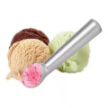

Sobre a Sorveteria Hollivan
A sorveteria Hollivan é um local encantador e delicioso, conhecido por oferecer sorvetes de alta qualidade e sabores únicos. A missão da sorveteria Hollivan é proporcionar momentos de alegria e prazer aos seus clientes, por meio da experiência de saborear sorvetes artesanais feitos com ingredientes selecionados e receitas exclusivas.
O diferencial da sorveteria Hollivan é a dedicação em oferecer uma variedade de sabores criativos e autênticos, cuidadosamente elaborados por mestres sorveteiros que estão sempre em busca de novas combinações e experiências gustativas. Cada sorvete é produzido com paixão e atenção aos detalhes, garantindo uma textura cremosa e um sabor inigualável.
Ao escolher a sorveteria Hollivan, você estará optando por uma experiência única de degustação de sorvetes de alta qualidade, feitos com ingredientes frescos e naturais. Além disso, a sorveteria se preocupa com a satisfação de seus clientes, oferecendo um atendimento caloroso e acolhedor em um ambiente aconchegante.
Nosso estabelecimento
Nosso estabelecimento está localizado no coração da cidade.
Benefícios
- Atendimento aos Clientes
- Espaço diferenciado
- Localização
- Profissionais Qualificados
- Pontualidade
- Limpeza